Manual de Técnico
Centro de Soporte
Guía para Técnicos del Areas Operativas: Infraestructura - OATI
Versión 2.0
Mayo 2026
1. Inicio de Sesión
Para acceder al sistema como técnico, abra su navegador web y diríjase a la dirección del sistema CSI.
- Ingrese su Usuario y Contraseña
- Haga clic en "Iniciar Sesión"

PANTALLA 1: Login
Importante: Sus credenciales son personales. No las comparta con terceros.
Al iniciar sesión como técnico, verá las siguientes opciones:
| Opción | Descripción |
|---|
| Inicio | Inicio con estadísticas |
| Mis Tickets Asignados | Ver tickets que tiene asignados |
| Aceptar Tickets | Ver y aceptar tickets disponibles |
| Nuevo Ticket | Crear un nuevo ticket |
| Mis Tickets | Ver tickets que ha creado |
| Mi Perfil | Editar datos personales |
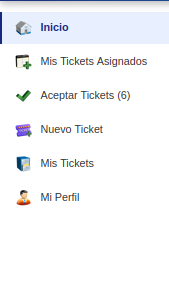
PANTALLA 2: Menú Lateral Técnico
Nota: En "Aceptar Tickets" se muestra un contador de tickets disponibles sin asignar.
3. Inicio
El Inicio muestra estadísticas de su trabajo como técnico:
- Asignados a mí: Total de tickets que tiene asignados
- Resueltos por mí: Tickets que ha cerrado exitosamente
- Disponibles: Tickets sin asignar que puede aceptar
También contiene botones de acceso rápido para ir a "Mis Tickets Asignados", "Crear Nuevo Ticket" y "Editar mi Perfil", además de una lista de Actividades Recientes con los últimos tickets del sistema.
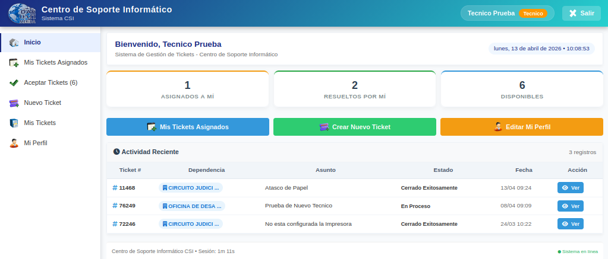
PANTALLA 3: Inicio del Técnico
4. Mis Tickets Asignados
Esta sección muestra todos los tickets que le han sido asignados.
4.1 Ver tickets asignados
- Haga clic en "Mis Tickets Asignados"
- Verá la lista de tickets que tiene pendientes
- Cada ticket muestra: número, asunto, prioridad, estado, fecha
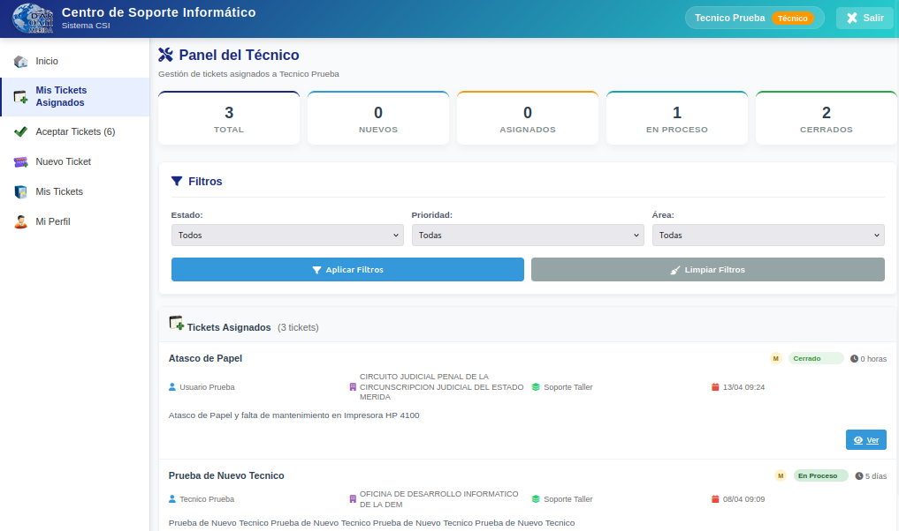
PANTALLA 4: Mis Tickets Asignados
4.2 Estados de los tickets
| Estado | Descripción |
|---|
| Nuevo | Ticket creado, sin asignar |
| Asignado | Ticket asignado al técnico |
| En Proceso | Técnico trabajando en el ticket |
| Cerrado Exitosamente | Problema resuelto |
| Cerrado No Exitoso | No se pudo resolver |
4.3 Filtros disponibles
- Filtrar por estado (Nuevo, Asignado, En Proceso, Cerrado)
- Filtrar por prioridad (Urgente, Alta, Media, Baja)
- Búsqueda por número de ticket o asunto
5. Aceptar Tickets
En esta sección puede ver y aceptar tickets que están disponibles (sin técnico asignado).
5.1 Ver tickets disponibles
- Haga clic en "Aceptar Tickets"
- Verá la lista de tickets sin asignar
- El contador en el menú muestra cuántos tickets hay disponibles
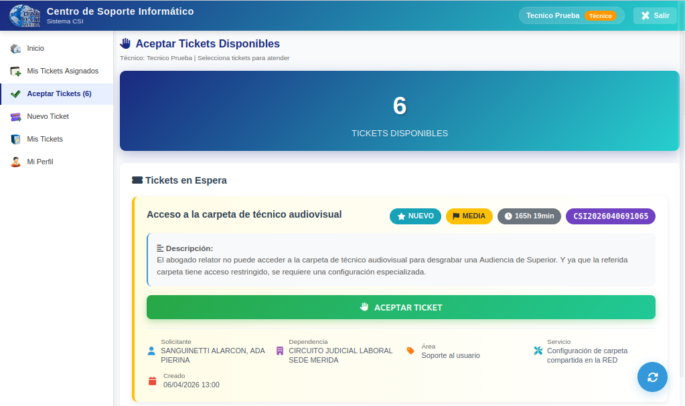
PANTALLA 5: Aceptar Tickets
5.2 Aceptar un ticket
- En la lista de tickets disponibles, haga clic en "Aceptar"
- El ticket se asignará a usted
- Pasará a estar en "Mis Tickets Asignados"
Importante: Solo debe aceptar tickets que pueda atender. Una vez aceptado, usted es responsable del ticket.
6. Crear un Ticket
Como técnico, también puede crear tickets (por ejemplo, si se hace una atención en la cual no han generado el Ticket, o para solucionar un ticket que depende de otra área como taller, en este caso se cierra el ticket que corresponde a su trabajo y se crea un nuevo ticket para taller).
6.1 Pasos para crear un ticket
- Haga clic en "Nuevo Ticket"
- Complete todos los campos obligatorios
- Haga clic en "Crear Ticket"
6.2 Campos del formulario
| Campo | Descripción |
|---|
| Dependencia | Lugar físico donde está el problema |
| Lugar / Área | Especificar el lugar exacto (oficina, pasillo, etc.) |
| Tipo de Atención | Seleccione OATI (Informática) o Infraestructura (Mantenimiento) |
| Área de Soporte | Se actualiza según el tipo de atención seleccionado |
| Servicio Específico | Se actualiza según el área de soporte seleccionada |
| Asunto | Título breve del problema |
| Descripción | Detalle completo del problema o actividad |
| Número de Bien (opcional) | Código del bien registrado en la institución |
| Serial (opcional) | Serial del equipo |
| Prioridad | Urgente, Alta, Media, Baja |
| Cédula (opcional) | Cédula del usuario que reporta (si es diferente al creador) |
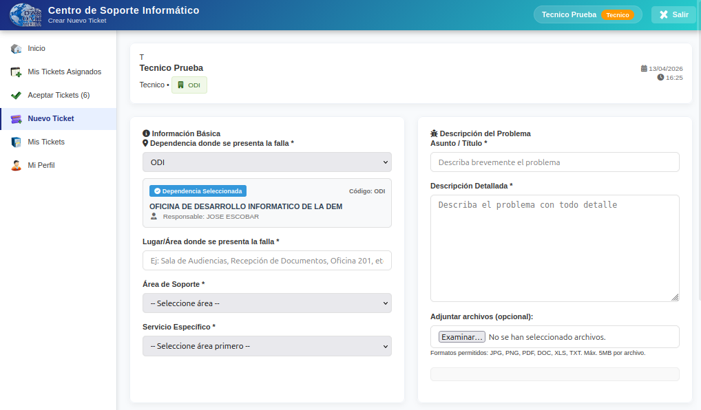
PANTALLA 6: Formulario de Nuevo Ticket
Nota: La "Dependencia" indica el lugar FÍSICO del problema, no su área de trabajo.
6.3 Tipo de Atención
Al crear un ticket, debe seleccionar el tipo de atención:
- OATI (Informática): Problemas con equipos de computación, impresoras, sistemas, redes, software
- Infraestructura: Problemas de mantenimiento, electricidad, plomería, mobiliario, estructura física
Al seleccionar el tipo de atención:
- Las listas de Área de Soporte y Servicio Específico se actualizan automáticamente
- Solo mostrarán las opciones correspondientes al tipo de atención elegido
Nota: Si selecciona OATI verá servicios de soporte técnico informático. Si selecciona Infraestructura verá servicios de mantenimiento general.
6.4 Número de Bien y Serial (Opcional)
Si el problema está relacionado con un equipo o bien registrado en la institución, puede ingresarlo para facilitar el soporte técnico.
- Ingrese el Número de Bien (formato: 03-28-7258) o
- Ingrese el Serial del equipo
- Haga clic en el botón de lupa
 para buscar en la base de datos de Bienes
para buscar en la base de datos de Bienes
Si se encuentra el bien:
- Se completará automáticamente el otro campo
- Se mostrará la descripción del bien debajo
- Aparecerá un check de confirmación

Nota: Este campo es opcional. Si no conoce el número de bien o serial, puede dejar los campos vacíos.
6.5 Adjuntar archivos
Si desea adjuntar evidencias (fotos, documentos, reportes o informes):
- Haga clic en "Adjuntar archivos"
- Seleccione los archivos de su computadora
- Formatos: JPG, PNG, PDF, DOC, XLS, TXT
- Tamaño máximo: 5MB por archivo
6.5 Asignar un Técnico
Al crear un ticket, también puede asignarlo a un técnico (incluido usted mismo o algún otro):
- En el formulario de creación de ticket, busque la opción "Asignar Técnico"
- Seleccione el técnico al que desea asignar el ticket
- Si no asigna ninguno, el ticket quedará como "Nuevo" y estará disponible para que cualquier técnico lo acepte
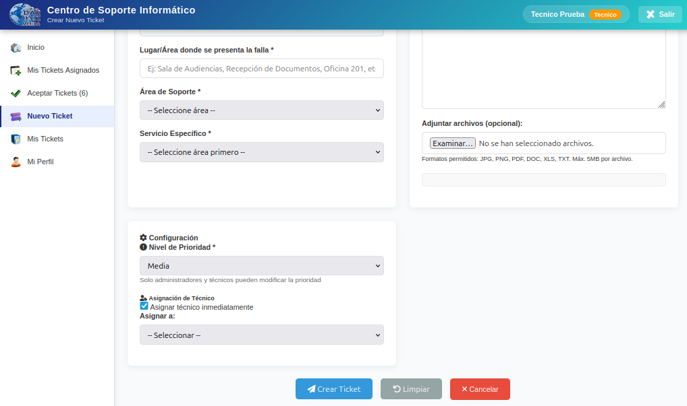
PANTALLA 7: Asignar Técnico
7. Detalle y Gestión de Ticket
Al hacer clic en un ticket asignado, puede gestionar todos los aspectos del ticket.
7.1 Acciones disponibles
Al visualizar un ticket, puede observar toda la información del ticket, incluyendo:
- Datos del solicitante
- Descripción del problema
- Historial de estados
- Notas y comentarios
- Archivos adjuntos
- Evaluación del usuario (si el ticket está cerrado)
Nota: Toda la información del ticket se muestra de manera organizada para facilitar el seguimiento.
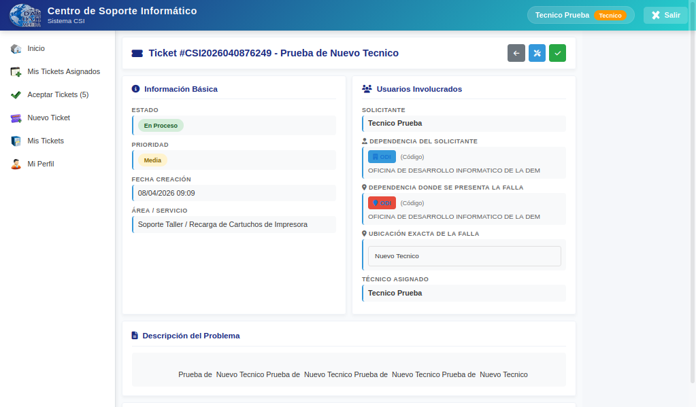
PANTALLA 8: Detalle del Ticket
7.2 Procesar Ticket
Al hacer clic en el botón "Procesar", podrá:
- Cambiar el Estado: Pasa al estado En Proceso
- Cambiar la Prioridad: Urgente, Alta, Media, Baja
- Llenar la Solución Aplicada: Describir cómo se puede resolver el problema o escriba las acciones que se están tomando (Esto lo ve el usuario)
Luego de realizar los cambios, haga clic en "Guardar Cambios" para guardar la información.
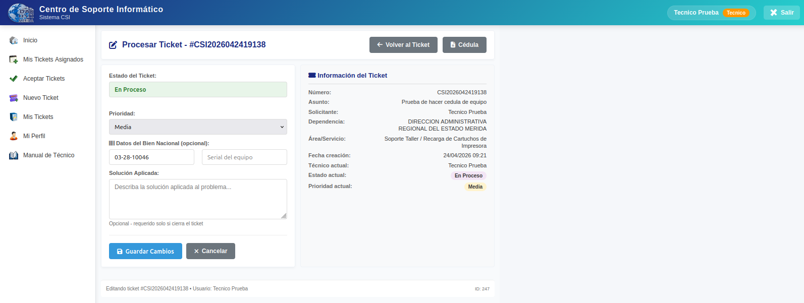
PANTALLA 9: Procesar Ticket
7.3 Generación de Cédula del Equipo
Cuando el técnico necesita trasladar un bien nacional para solucionar su falla, el sistema puede generar la Cédula del Equipo.
Requisitos para activar el botón:
- Introducir los datos del Bien Nacional (Número de Bien o Serial del equipo a trasladar)
- Rellenar el campo "Solución Aplicada" con la descripción del trabajo a realizar
Una vez cumplidos los requisitos:
- Se activará el botón "Cédula"
- Al hacer clic, se abrirá una nueva pestaña con los datos del ticket y la información del bien
- El técnico puede modificar la información si es necesario
- Puede imprimir directamente la Cédula del Equipo
Nota: Esta función facilita el control de bienes que requieren traslado a taller o servicio técnico externo.
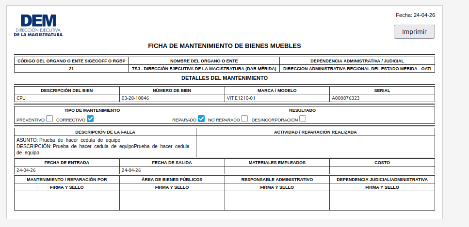
PANTALLA 12: Botón Cédula activo
7.4 Cerrar un ticket
Para cerrar un ticket, debe:
- Completar la solución o motivo del cierre en el campo "Solución o motivo del cierre"
- Seleccionar el tipo de cierre:
- Cerrado Exitosamente: El problema fue resuelto
- Cerrado No Exitoso: No se pudo resolver el problema
- Haga clic en "Cerrar Ticket"
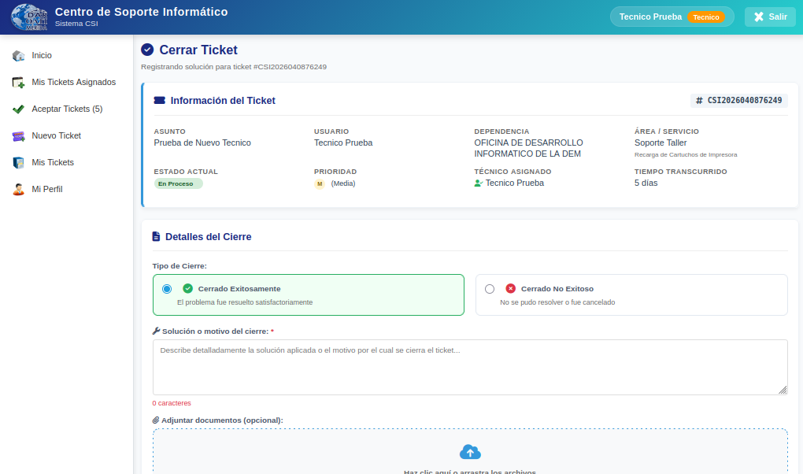
PANTALLA 10: Cerrar Ticket
Importante: Al cerrar exitosamente, el usuario recibirá una notificación y podrá evaluar su atención.
8. Mi Perfil
Administre sus datos personales:
- Haga clic en "Mi Perfil"
- Actualice: nombre, correo electrónico
- Cambiar contraseña: ingrese contraseña actual y nueva
- Guarde los cambios
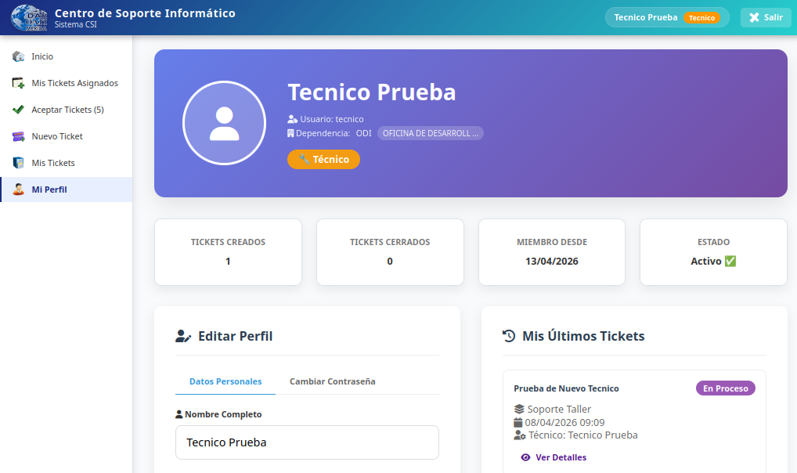
PANTALLA 11: Mi Perfil
 Inicio
Inicio Nuevo Ticket
Nuevo Ticket Mis Tickets
Mis Tickets Mi Perfil
Mi Perfil